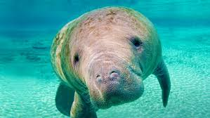
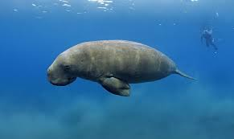
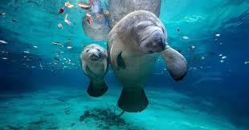
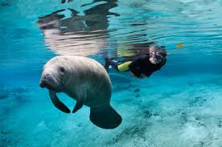

What is a Manatee?

Manatees are a fully aquatic and mostly herbivorous marine mammals. They are also known as sea cows. The three living species of Manatees are the Amazonian Manatee, West Indian Manatee and West African Manatee. They are very large animals that measure up to 13ft long and can weigh as much as 1,300lbs. They have paddle-like flippers which is why the are herbivores. Despite their size and stubbly snout, manatees seem cute and cuddly to many ocean visitors. These large, slow-moving marine mammals hang out in costal areas and rivers.
Why are Manatees called sea cows?
Manatees are called sea cows because they are slow plant-eaters much like cows. Also, they are peaceful and are similar to cows on land. They often graze on water plants in tropical seas.
   
Endangered Manatees
The West Indian Manatees in the United States are protected under federal law by the Marine Mammal Protection Act of 1972. This makes it illegal to harass, hunt, capture, or kill any marine mammal. Violations of these federal laws can be met with civil or criminal convictions associated with imprisonment.
In Florida, Manatees were first protected by Florida State Law in 1893. Now, they are federally protected by both the Marine Mammal Protection Act and the Endangered Species Act.
To help save the manatees join Save the Manatees Club to help protect manatees and their aquatic habitat for future generations.